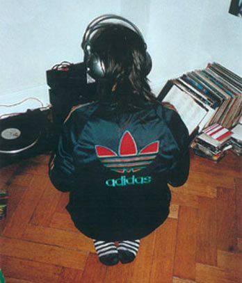

| Maj 2004 |

Så du programmet Danske DJs på DR2, eller har du bare lidt kendskab til det københavnske club-miljø, så har du sikkert hørt navnet DJ Djuna Barnes.
Den 26-årige amarikaner Maria Gerhardt har med sin kompromisløse DJ-stil fundet fodfæste i branchen og er på vej frem.
Kontrasten mellem at se hende lige da hun er trådt ind ad døren på baren Heaven, indhyllet i sit lange sorte hår og sagte sige til bartenderen som en lille usikker pige:” en hyldeblomst, tak”, og til hun sidder overfor mig ved bordet og har rullet den første Bali Shag smøg og får stillet det første spørgsmål, kunne ikke være større. Hvert af mine spørgsmål har effekt som en lavine, og svarene strømmer ud af hende - godt mixet med en ”rend mig i røven”-attitude.
Maria har taget sit kunstnernavn efter den modernistiske amerikanske forfatterinde Djuna Barnes, der i 1930’erne sideløbende med at være modereporter på Vanity Fair, levede et udsvævende liv i London og Paris med folk som Jane Teller og Gertrud Stein.
”Jeg tog det navn, fordi jeg er meget vokalinteresseret. Altså noget andet end bare ”ryst din røv” eller ”let’s dance”, som meget clubmusik har en tendens til at forfalde til. Jeg synes, det er sjovt, hvis jeg kan få vokalerne til at snakke sammen. Og så er det jo oplagt at opkalde sig efter en forfatter. Og Djuna Barnes er den cooleste lesbiske forfatter, som de færreste kender. Plus at alle drengene har opkaldt sig efter tegneseriefigurer og seriemordere: Jeg vil gerne vise, at jeg har en anden tilgang til det at spille plader”.
Nørderi
Bortset fra at være født med en tilsyneladende yderst veludviklet passion og kærlighed for musik, så var det første afgørende spring i DJ-retningen for Maria, at spille til en stor fest i hendes kollektiv. Derfra blev det til DJ-jobs ved privatfester, bryllupper og store mainstream lebbefester. Den kompromisløse stil, som kendetegner Maria i dag, tog sit udspring for to år siden. ”Alle mine cd’er blev stjålet ved et indbrud, og så tog jeg et valg og gik ud og købte to pladespillere, og fra den dag af har jeg kun købt musik, som jeg synes er fantastisk!”
Har det været hårdt at være ene kvindelig DJ? Har det været en anderledes kamp?
”Der er i hvert fald ingen tvivl om, at det har været noget andet. Man bliver altid bedømt på en anden måde. Drengene står altid og venter på at se, om du er god til at mixe, mens pigerne inderligt håber, at du kan. Jeg tror, at det dummeste, man kan gøre, er at sige, at det er lige meget, om man er en kvindelig eller mandlig DJ. Det er det jo ikke! Og jeg er tilmed lesbisk, så jeg er jo på en eller anden måde en skæv figur. Jeg står jo ikke og er hende den dér lækre, der spiller noget sexet r’n’b. Der jo enormt meget fokus på kvindelige DJs for tiden. Dj-kulturen boomer, men det er en nyhedsværdi, at man er kvinde, fordi det traditionelt er et mandefag. Dels fordi det kræver en del nørderi som teknisk træning og oplæring af sig selv, så man kan sin musik historie. Dels kræver det, at man bruger alle sine penge på plader - altså samler-manien og vinyl-junkieriet. Og endelig har det en snert af rockstjerne-liv med skæve sengetider, sprut, narko og opmærksomhed omkring ens person”.
Men er det også det, der har været drivkraften - at være den skæve figur fordi du er kvinde og tilmed lesbisk?
”Jeg synes jo i hvert fald, at det er sjovere, at jeg kan komme og give noget andet end bare at stå og være lækker. Jeg bliver jo ikke booket på grund af mit udseende, medmindre det altså er i Kvindehuset. Men der er da en masse modstand, jeg gerne ville have været foruden. Jeg står ikke længere kun derhjemme og nørder igennem. Jeg er meget ude og går meget i byen, og hører en masse musik. Og jeg kender efterhånden en masse folk, fordi der er en stor netværksting i at være en del af et club-miljø på forskellige scener. Og hvis det er ufeminint at stå derhjemme og nørde igennem, så er det endnu mere ufeminint at gå rundt og gøre opmærksom på sig selv. Det er et ret udfarende liv. Men samtidigt er det skide sjovt, og når man har stået derhjemme og øvet et eller andet set i 12 timer, så er det da fantastisk at komme ud og få en reaktion på det - også selvom jeg spiller mere og mere impulsivt, og tit er bedre når jeg er nonchelant og ikke tænker så pisse konceptuelt”.
Hvad betyder det for dig, om det er homo-musik du spiller eller ej?
”Jeg køber altid et nummer, hvis der er et eller andet homofilt over det. Hvor det er fedt, alternativt og ikke lige så åbenlyst disco-bøsset som Village People, eller lebbe-sing-a-song-write. Jeg kan godt lide kontraster: En fimset mandestemme i et ellers ret hårdt nummer og jeg kan ret godt lide sådan nogle dopede kvindestemmer, der siger et eller andet mærkeligt. Nogle gange er det homofile decideret tydeligt i teksten, men det kan også godt bare være små detaljer. Jeg elsker uforudsigelighed, numre der ændrer tempo, mærkelige breaks og blanding af genrer og tydelige referencer til musikalske perioder. Jeg spiller selvfølgelig de tydeligt homo-refererede numre til dunst fester eller i Kvindehuset, men det er også sjovt at stå på Rust og spille de bedste af dem. Klassikeren af kønsforvirring er cover-versioner, hvor der er byttet rundt - hvor et nummer der egentligt er sunget af en mand, bliver sunget af en kvinde. Et eksempel er ”I was made for loving you” et Kiss-cover nummer af Queen of the Japan, hvor det er helt tydeligt. Den er de lesbiske sgu’ blevet helt vilde med”
Maria spiller på både heteroklubber og i homomiljøet, og hun vil ikke begrænse sig til kun at spille i det homoseksuelle miljø, for der er efterhånden mange andre spillesteder, hvor de har en musikprofil, hvor hun passer ind. Steder, hvor publikum også er åbne for den skæve stil, hun spiller. Hun tror, at hun bliver booket udenfor det homoseksuelle miljø, fordi hun er dygtig til at få det hele til at hænge sammen. Til at guide folk igennem de forskellige genre og give dem en anderledes oplevelse.
Break-even
Inden for det sidste stykke tid har Maria fået mere og mere at lave. Det er efterhånden sådan at hun har nået til et break-even, som hun selv kalder den økonomiske balance, der har indfundet sig mellem udgiften til plader og indtjening på jobs. Flere og flere har fået øjnene og ikke mindst ørene op for den kompromisløse stil, der toner frem, når hun er placeret bagved pladespilleren på klubberne. Selv mener hun ,at det kan bunde i, at der i starten af året var en stor releasefest for DR2 programmet Danske DJs på Vega, hvor hun spillede godt, og hvor hele branchen var repræsenteret. ”Det er fedt bare at have sit eget og lytte efter, hvad man selv synes: At lade være med at lade sig påvirke i pladeforretningen og lytte til, hvad de synes er fedt. Jeg bliver mere og mere sikker på, at hvis jeg synes noget musik er fedt, så er det fedt! At det kun er mig, der bestemmer, og det er fandeme også noget, man skal lære sig selv især som kvinde, fordi det er så nemt at blive påvirket af alle mulige der lige synes, at jeg skal være mere sleazy som Peaches eller lidt mere stringent techno…eller…eller. Det er også det, det handler om, når man er ude at spille. Selvfølgelig er det fedt at følge sit publikum og hvor de vil hen, men man skal også tro på, at det man laver er fedt. Og skabe sit eget. For det er dér, man bryder med et eller andet. Det er dér, du giver folk en anden oplevelse. I stedet for at stå og prøve at spille hvad ham derovre i den ’blå tophue’ spiller”.
I takt med at Maria har fået flere og flere jobs, hendes teknik er blevet bedre og musikviden større, har hun fået mere tro på sig selv og på det, hun laver. Hun er ikke længere så nervøs, som hun var i starten, og kan bedre slappe af og feste med bag mixerpulten.
”Der er altid nogle, der har en holding til det, du spiller. Musik er så individuelt fordi det at gå i byen er så individuelt. Du sidder ikke i biografen, men stadigvæk så er det mig, der er instruktøren på den fucking film - jeg ikke er en jukebox. Det bliver nødt til at være mig, der bestemmer. Men folk har forskellige opfattelser, fordi der sker så meget i byen. Én har måske scoret hende dér og synes, det har været en god fest. Dem dér oppe i baren, hvor de er løbet tør for øl, synes det har været en dårlig fest – alle har en mening om det, og man kan ikke tilfredsstille alle - sådan er det bare. Jeg kan bare håbe på et nogenlunde ordentlig anlæg, en nysgerrig crowd og så tro på mine plader. Måske er det kun lige to minutters magi, måske er den der slet ikke, og nogle gange er den, der en hel aften. Og det er de aftener og min intense kærlighed til musik, der driver værket”
Tjek www.djunabarnes.dk
Forf. Sarah Rathje
www.panbladet.dk/artikel/178
Print denne side